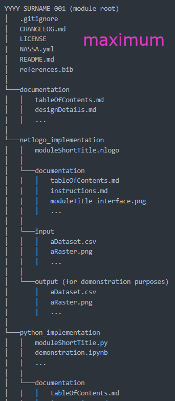
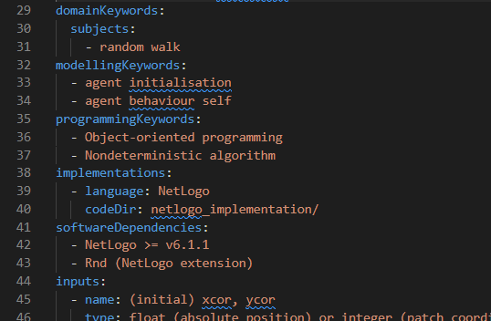

NASSA’s open library
of archaeological ABM modules
overview and examples
available at
https://andros-spica.github.io/CAA-DE-NL-FL-Angourakis-et-al-2022/
https://andros-spica.github.io/CAA-DE-NL-FL-Angourakis-et-al-2022/index.html?print-pdf (printable version)
https://andros-spica.github.io/CAA-DE-NL-FL-Angourakis-et-al-2022/index.html?print-pdf (printable version)
Network for Agent-based modelling of
Socio-ecological systems in Archaeology
Scientific Research Network (WOG) - FWO, 2020-2025
NASSA missions:
Create and maintain an open library of modular components for agent-based modelling (ABM) in archaeology
Improve reproducibility and re-usability in the field
Smooth communication with archaeologists (and beyond)
Facilitate learning processes of next generations
- NASSA GitHub organization: https://github.com/Archaeology-ABM
- NASSA overview: https://archaeology-abm.github.io/NASA
- Library repository: https://github.com/Archaeology-ABM/NASSA-modules
- Library Web interface: https://archaeology-abm.github.io/NASSA-modules
- For registered members: mailing list, Google Drive, Slack
Action fronts
- Library infraestructure
- Module submissions
- Module curation
- Promotion
Contact
Dries Daems
to join us!
Dries Daems
to join us!
NASSA's Library | Concept
- Collection of modules, not models
- Enforcing common but flexible standards
- Aimed at all levels of model developers
- Primarily oriented to archaeology
(interdisciplinary, but usable by archaeologists) - Substantially different from other open science initiatives (e.g. CoMSES)

An open source ecosystem
Module submission | "Gist"
- Procedure still to be formalised, so for now there are only a few practical steps are required
- Minimal knowledge of Git and GitHub is welcomed but not necessary
- Submissions are reviewed by NASSA members to comply with NASSA schema and minimal standards (no gate-keeping!)
Module submission | Code
Prepare the module code keeping in mind reproducibility and re-usability- Naming clarity
- Single-responsibility principle
- No magic numbers
- Exposed inputs and outputs
- Keep it basic (minimise dependencies)
- Commentary in code
Module submission | Documentation
Prepare documentation files
- README.md
- Human readable free text presenting the module
- Includes title, author, version, etc.
- Hyperlinks to documentation and demonstration materials
- Is used in the generation of a module webpage (HTML)
Module submission | Documentation
Prepare documentation files
- Variable lists, diagrams, pseudocode
- Screenshots
- Demonstrations, tutorials
- Additional documents
(e.g., ODD, if applicable)

Module submission | NASSA.yml
- Defines the module as a library item (metadata) and is used for generating webpage
- Human- and machine-readable (YAML)
- Module ID and title
-
Module type: algorithm or submodel
(whether it contains modules or not) - Authorship additive and role-specific
- References (BibTex) grouped as module references and use cases
Module submission | NASSA.yml
- Versioning and progressive development
- One-module, one-license
-
Semantic tags
- programming
- modelling
- domain (subject, period, region)
-
Inputs and outputs
- name
- type
- unit
- description

Module submission | Validation
- Download nassa-hs (https://github.com/Archaeology-ABM/nassa-hs)
- Run it on the local module directory
- Correct, if not passing validation
See instructions at nassa-hs repository
Otherwise,
another NASSA member/author
may be available to perform the validation
and submission in your behalf.
Module submission | Publication
There are currently two options to submit a module:
- Directly,
via a GitHub "pull request" - Indirectly,
sending files to NASSA members
(attachment or download link)

Library Web interface

https://archaeology-abm.github.io/NASSA-modules
Scientific Research Network (WOG) - FWO, 2020-2025
- NASSA GitHub organization: https://github.com/Archaeology-ABM
- NASSA overview: https://archaeology-abm.github.io/NASA
- Library repository: https://github.com/Archaeology-ABM/NASSA-modules
- Library Web interface: https://archaeology-abm.github.io/NASSA-modules
- For registered members: mailing list, Google Drive, Slack
Acknowledgements
Thanks to all NASSA members,
especially to
Clemens Schmid (Max Plank Institute for Geoanthropology)
who has made most presented here possible!